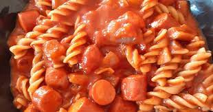

Broke Boys Pasta

Description:
This recipe is an easy and delicious rendition of pasta. It only needs 4 ingredients to make
and will take you less than 20 minutes to cook up.
Use your favorite sauce and glizzy and mix that john up!
Ingredients:
- Water
- Pasta Sauce
- Glizzy
- Rotini Pasta
Optional:
Directions:
- Set the water to a boil.
- Put the noodles in when it starts boiling
- When noodles are cooked, drain the water from the pot.
- on a low fire, throw the pasta sauce into the pot with the noodles
- in another bowl, chop up the glizzys and throw that john in the microwave
- after the dogs are done cooking, throw it all into the pot
- turn off da heat and enjoy!!!
- if your a little extra crazy, thrown in some cheese at the end ;)